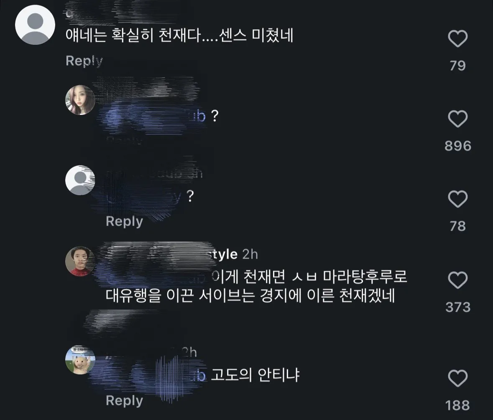
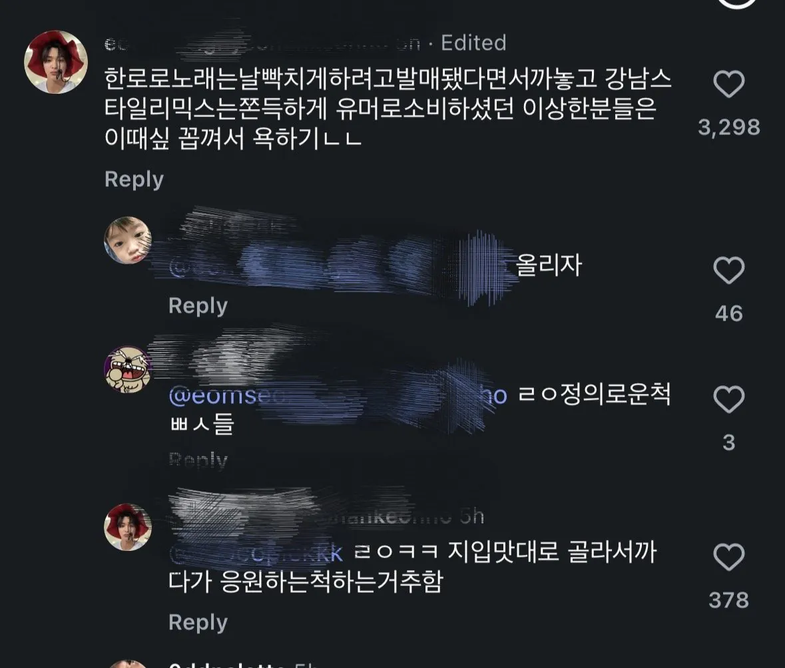
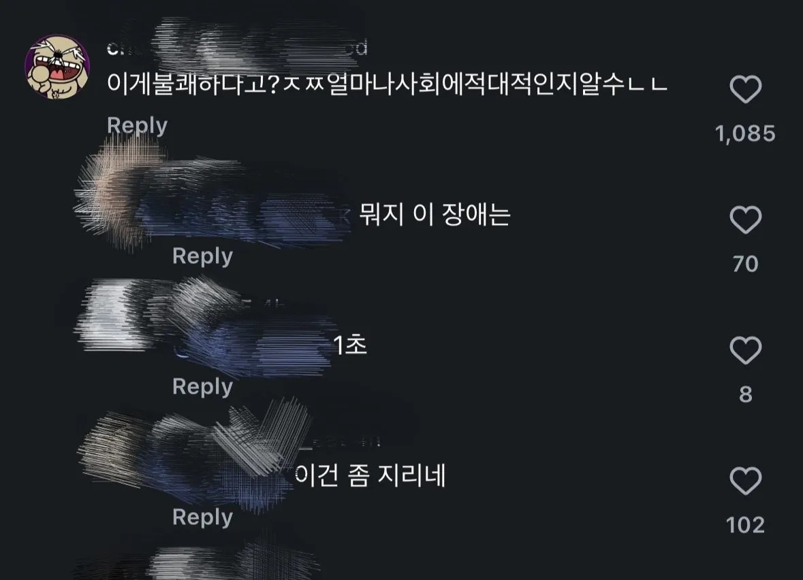
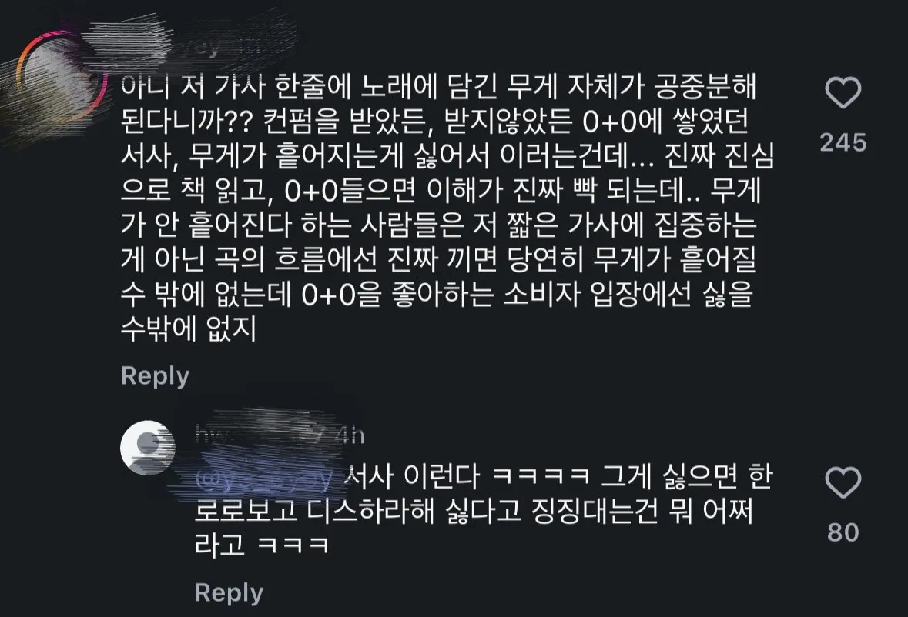
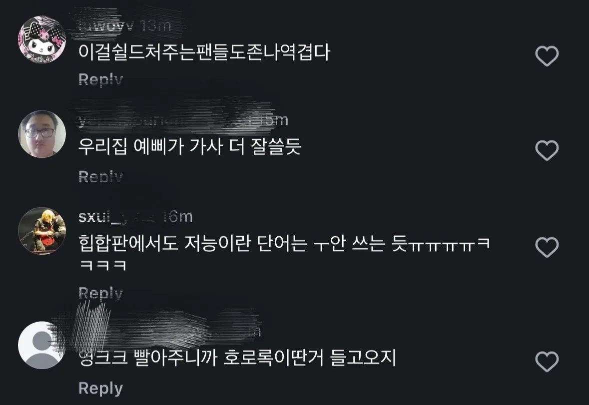
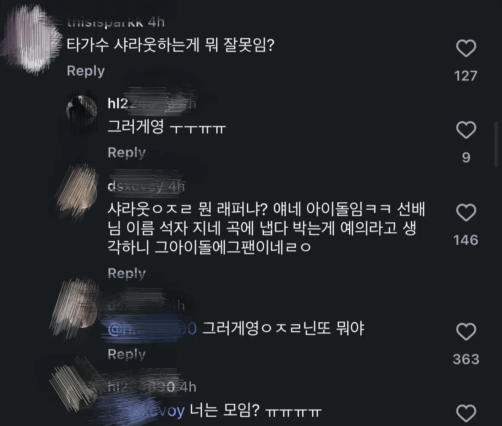

최근 힙합 아이돌 그룹 코르티스는 신곡을 발표.
신곡 가사에는
”난 될래 놀며 돈을 버는 사람 뽀로로“
”통장에 0에0을 더해 마치 한로로“
”저능해진다더니 다들 침 호로록“ 라는 가사가 있고
뽀로로,한로로,호로록으로 라임을 맞춘것 같음.
코르티스 팬들은 기발하다, 천재적이다라며 대부분 좋은 반응을 냄.
하지만 한로로 팬들은 독립적으로 활동하며, 한로로 특유의 진지함과 서정적인 느낌을 한로로의 매력으로 평가하며 좋아함. 하지만, 한로로 팬들은 선배 가수를 마음대로 언급하며, 진지함과 서정적인 이미지와 이름을 돈과 놀이로 연결하여 농담으로 소비하는게 불쾌하며 화가 난다라는 평이 지배적.
참고로 힙합장르 특성상 타 아티스트를 언급하며 친분이 없어도 언급이 비교적 자유로움.
결국 두 팬덤은
디스를 한 것도 아니고 단순 라임인데 왜이리 과대해석하냐VS 상대 아티스트의 동의 없이 이름을 가져와 가벼운 맥락에 넣은 것 자체가 예의에 어긋.
라는 의견으로 갈리며, 댓글창에서 총과 칼을 들며,명예를 지키기 위한 싸움을 진행중.






세줄 요약.
1.코르티스가 신곡에 가수 한로로를 언급하며 라임을
맞춤.
2.한로로 팬들은 평소 한로로 곡 분위기와 맞지 않는 식으로 한로로를 언급하여 가사를 쓰고, 후배가 싸가지 없게 선배를 마음대로 언급한다고 개빡침.
3.코르티스 팬들은 같잖지도 않은걸로 지랄 떨지말라고 하는 중.
.
.
.
.
.
근데 얘들은 저런거 아니더라도 그냥 순수하게 가사가 구림 ㄹㅇ
댓글
수집 당시 댓글 18개
즐기시게냅둬 · 5 시간 전
기분나쁘진 않은디 좀 유치하네
민티아 · 5 시간 전
한로로는 누구냐
2001년생김민정 · 5 시간 전
언급을 뗘나서 가사가 졸라 유치한 수준인데 무슨 센스가 좋고 천재적이라는건지 그놈의 아티스트호소인 천재호소인 컨셉이 다 망치네ㅋㅋㅋㅋㅋ
신성 · 5 시간 전
한로로 엄근진들은 0플0 강남스타일도 싫어함
흰껄룩기획 · 5 시간 전
예전에 최예나 hate rodrigo 도 겁나 욕먹엇지 그것도 진짜 싫어서 저런 제목을 붙인게 아니라 가벼운 질투 느낌으로 동경을 표현한 그런거였는데 불탄거 보면 예민한 문제긴 한듯
사람있어요 · 4 시간 전
초딩 수준 펀치라인 써놓고 천재니 뭐니 하는거 보면 어이없긴 함.
나딱조아 · 3 분 전
중고딩 애들이 노래참여하고 가사쓰고 춤도만들고 뮤비제작 까지도 하는데 천재라고 해주면 어디 덧나냐 ㅋㅋ 자적자임 이정도면
whoiam · 4 시간 전
그냥 바이럴 잘되서 유명해진 케이스 아님? 특별히 내세울게 아무것도 없잖아
이윽고 · 4 시간 전
가사 존나 구리네ㅋㅋ
SeinundZeit · 4 시간 전
암만 우겨봐야 개가 늑대가 되지 않고 호박에 줄 긋는다고 수박이 되는게 아니다. 천재는 지금 천재라고 불리기에 천재가 되는 것이 아니라, 오랜 시간이 흐른 뒤에 회자되면서 '천재적이었던 것'으로 나타난다. 꽤 오랜 시간이 지난 뒤에, 10년 뒤 20년 뒤에도 그것이 살아남으며 회자된다면 천재가 맞다. 그런데 그 내용상 아무런 규정도 의미도 없는 코르티스의 노래들이 오랫동안 살아남을 수 있는가? 예컨대 순수 연주곡인 클래식이나 트랜스처럼 살아남을 수 있겠는가? 모를 일이다. 되어봐야 알 수 있는 일. 그러나 지금 보이는 바에서는 그 가사라는 음악의 내용물 중 일부가, 어설프게 의미를 가지기에 오히려 음악 전체를 훼손하는 오물처럼 보인다. 옥의 티는 완벽을 암시하기에 완벽보다 더 완벽한 화씨지벽을 상상하게 만드는 요소가 되지만, 그냥 일그러진 옥과 흠결이 있는 옥의 차이는 아무튼doch 있는 것이다. '궁뎅이 가리기', '도가니 사리기' '영ㅋㅋ 영ㅎㅎ' 따위의, 아무런 의미를 갖지 않는, 규정을 거부하고 음성적 요소로써의 소리만을 향유하기에 그것은 언어가 아니고 그냥 음악의 요소이자 소리이다. 그래서, 이 "음악의 소리"가 정말로 완결성을 훼손하는 것이 아니게 될 날은, 그것을 듣는 인간이 언어와 말하기의 의미를 잊고 그저 소리와 음악으로 되돌아가는 날과 같지 않을까. 예술은 규정지어진 것을 위반할 때 비로소 의미있는 것이 된다. 그러나 규정지어짐 자체를 거부하는 예술은 예술로 거듭나는 것이 불가능하다.
잉굴 · 4 시간 전
솔직히 한로로를 떠나서 노래 수준이 아니까나랑 동급이잖아 20년전이었으면 수준떨어진다고 방송금지먹었을걸?
Erino · 4 시간 전
뽀로로 한로로 호로록이 뭐가 기발한건지 잘 모르겠다 난
년경력전차장 · 4 시간 전
나이쳐먹고 저런거 좋아하면 저능이가 맞음
진시항S2 · 4 시간 전
근데 남돌을 왜이렇게 싫어함? 개드립친구들??? 영하고 잘생겨서?
양파공장 · 3 시간 전
한로로 팬들은 또 뭔데 ㅋㅋㅋㅋㅋㅋㅋㅋ
애미나이 · 3 시간 전
난 키디비 사진보고 .. 읍읍
dkckdh · 3 시간 전
오늘도 이찬혁 1승
순애가필요해 · 2 시간 전
뽀로로 케로로 기로로 도로로 렛츠 고